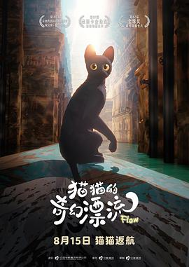
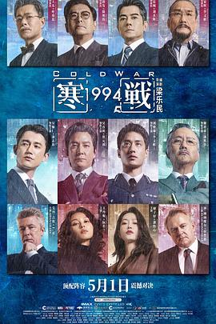
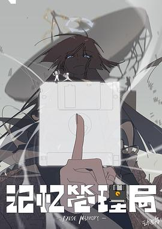
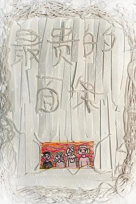
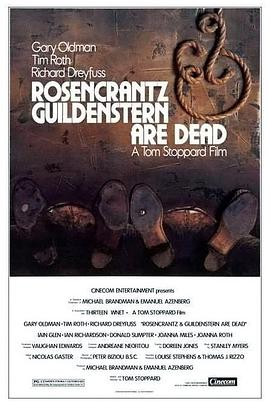

2026年8月
广播发布后不可编辑，所以每条都是那一刻的原话。
2026-08-31 15:59:01
 读过 喬瑟與虎與魚群 ★★★★☆
读过 喬瑟與虎與魚群 ★★★★☆
有点像报刊上爱情小说的文风。喜欢《行李已打包好》这一篇。（2025, 9, 21，终于读到这篇被改编多次的文章了，但是主要人物很少，重点在乔瑟的身上和其与管理员的感情。）（2025, 9, 22，《马芬蛋糕》里的连大叔也太变态了吧。）
2026-08-31 15:57:54
 想读 海潮之聲
想读 海潮之聲
2026-08-29 23:39:01
看过 抓特务 ★★★★☆
到底时代重担活生生地压在了两个人的身上，之后时代流走，变着花样地戏耍他们。但这样的例子不得不说真很能直接体现新的体制对人的改造的影响之大。两位主演都很不错，不过于老师才是真正装糊涂的高手。冯导又想叽里咕噜讲点啥，最后到底讲了啥。
2026-08-28 22:31:09
 看过 密档 ★★★★☆
看过 密档 ★★★★☆
一份另类的谍战片，摄影和灯光太高级了，对镜子或玻璃之类所产生的虚像玩弄得手到擒来炉火纯青。故事上见微知著，聚焦于一对地下党夫妻无论工作无论私下的故事。小楼里的各位房客各有特色，其中黄龄最为出色。关于深景深大广角的跟拍难不成真没办法不穿帮不拍到摄影师的影子，在演员最用力的时刻却出现最低级的错误，很可惜。若论观感最为相似的，大抵是程耳的《无名》吧。题外话，我们这儿的影院竟然用《密档》的海报背包来宣传《牛来》。
2026-08-28 14:52:42
看过 肖申克的救赎 / The Shawshank Redemption ★★★★☆
剧情一波三折，故事刻意将焦点放在了一位无辜的囚犯身上，又凑巧关进了臭名败坏的监狱，只有这样子最后的逃生才显得格外自由。因此成哏的真正的主角肖申克才迎来了属于其的救赎。Freeman的旁白我只能信着一半一半，毕竟监狱这样的暴力机关存在即合理。院线版的字幕开头好赶人，下次歌词为歌词，标题为标题，台词为台词分开不好么。还好画面故事都很不错，但仍然不理解为什么会是榜首。
2026-08-24 17:09:31
看过 菜肉馄饨 ★★★☆☆
上海的地气哪是这样的，一股小布尔乔亚的气息。几位老师演得很好，惊喜王菊的出演。弄堂的群戏太刻意客套了。总体讲完了一个故事，还行。
2026-08-23 23:31:08

小猫可不可以别一开始就哈气呢。最喜欢拉布拉多。艺术风格可谓独特，开幕时的颜色断层我还以为是视频压制的问题。惊叹于导演对各种动物惯习的深刻理解与相对应的拟音设计。对故事中规中矩，最后一头雾水，莫非是想借动物习性喻人以讲求新式方舟故事么。话说这片子的片头也太长太多了吧。
2026-08-23 15:59:30
看过 人鱼 ★★☆☆☆
老妈随便点开的，我跟着随便看看。滥用玻璃的反射，太低级。耳环姐的演技其实并不讨喜，反而发箍大姐大更亮眼一些。剧情一眼明了的情况反倒很吃演员的演技。
2026-08-23 15:51:11
看过 第二十条 ★★★☆☆
高叶姐和雷佳音真的是一个时代的人么？去工地竟然不用戴安全帽么？“说服”的读音还可以有两个么？如果真真想讲理，那最后的情感煽动就不该出现。但当今的检察院法院化，只剩认罪认罚了。马丽和赵丽颖演得蛮精彩的，尤其酒局上的胡闹看得真心梗。老谋子又糊涂了，好些镜头有穿帮。
2026-08-22 22:17:45
看过 镖人：风起大漠 ★★★☆☆
开头晋哥的客串很惊喜。话说这女主补拍和重拍有什么区别？最喜欢吴京与谢霆锋的打戏，流沙的视效做得不错。至于文戏只能说还讲得过去。
2026-08-21 23:16:39
 看过 得闲谨制 ★★★★☆
看过 得闲谨制 ★★★★☆
骨肉相撕那句嘶吼太撼动人心，不愧是兰老师笔下的文字。肖哥哥这次演技很惊喜，喜欢依然对角色的刻画，畅畅也演得特好。整体故事上便深居我心，从小城寡民入手，不拘泥宏大叙事，用活生生的人来体现这场战争的艰涩。曾老师的摄影很好看。喜欢对现代配乐的克制使用，大部分都用的是老歌。太爷得了mvp真是没想到的，估计是他常常背着牌位所积的功德。
2026-08-21 00:01:41
看过 送你一朵小红花 ★★★★☆
喜欢日常里扮演的非日常旅行，雨里的两位自白都蛮不错的，小岳岳还挺亮眼的。今时今日又思念媛媛姐了。父亲吃红烧牛肉饭那段太戳人了。韩导cue了下自己的前作蛮好玩的，其实最后幻觉的前景化反倒更能衬托出对命运不公的抵抗的态度的。“生命”三部曲拍得真蛮好的。
2026-08-20 21:37:34
在看 人鱼 ★★☆☆☆
老妈随便点开的，我跟着随便看看。滥用玻璃的反射，太低级。女主的演技其实并不讨喜，反而发箍大姐大更亮眼一些。
2026-08-20 16:08:13
看过 去你的岛 ★★★★☆
场景和视效做得不错，故事上可圈可点，两次的“发现-突转”教我很惊喜。伏笔回收得恰到好处，法棍那么硬难怪店里没客人。喜欢最后拥抱开花的环绕镜头。庆幸自己选了这一部。但爱情里必须纠错不清么，处处封闭拒绝恐怕我也会受不了的吧，大概，所以你就是这样离开我的么，对么。
2026-08-19 22:55:13
看过 奇迹·笨小孩 ★★★☆☆
中规中矩的献礼片，虽然剧情刻意且困难总是很易猜地程式化地出现，但文导的功力还是使一些片段很好看了起来。四字焊电阻为啥不上松香。长短线耳机原来这样潮流么。
2026-08-19 22:51:52
 听过 世上只有爸爸好 ★★★★☆
听过 世上只有爸爸好 ★★★★☆
词写得不错。
2026-08-19 15:51:29
看过 空枪 ★★★☆☆
音乐排得很满，但还好每首都不错，最喜欢开头约会的浪漫情调。节奏不拖沓，只是部分镜头有呼吸效应好难受，观景台的戏时常越轴很莫名其妙的。最后想说阿亓这也太碰巧了，怎么会刚好有个广西战友又刚好知晓一条小路呢。韩导的客串好搞笑，又拍了一遍疯癫的小丑。
2026-08-18 23:10:48
看过 星河入梦 ★★★☆☆
又是一场精彩的视觉盛宴，好一些场景仿佛渲染大赛的混剪。剧情根本经不起推敲，彩蛋不就意味着男主白费了么，况且单机的意识怎么会有时间概念以至于说出“好久不见”这般话呢。但有时真挺羡慕韩导，毕竟他是当真什么题材都拍过都能驾驭住交出一份不错的作品的。
2026-08-18 16:48:14
看过 门牙 ★★★★☆
最后的垃圾桶是神来之笔。女主演得还蛮好的，没出戏。家家有本难念的经，大城市机会多，困难也很多。音乐都蛮好听的。话说《心之田》不就是《星露谷》么。编剧在故事最后还是心软了哦，不过he看得就是舒坦啊。
2026-08-16 23:55:45
看过 浪浪山小妖怪 ★★★★☆
画师公鸡那儿还cue了大师兄最经典的“不干了”的台词，画了好些经典的唐僧四人的形象，好玩。在小猪回家的时候父母的唠叨与骄傲太眼熟，好容易泪目。那所谓的四个小妖论迹不论心，实实在在做了好事的时候也就无所谓正牌不正牌了。对原著九九八十一难的还原着实没想到，没理解彩蛋的作用。最喜欢小黄鼠狼了。
2026-08-16 23:51:53
 看过 少年派2 ★★★☆☆
看过 少年派2 ★★★☆☆
陪老妈看的第二部，第一部也是老妈先看我后追起来的。喜欢可爱的林妙妙与憨憨的爱而不得的天昊。
2026-08-16 23:51:40
看过 小芳 ★★☆☆☆
母亲随便调出来看的，第一集的山中呐喊也太尬了。果然还是应该杜绝婚前性行为。
2026-08-16 15:57:54
 在读 虚拟偶像、AI数字人与赛博生命 ★★★★☆
在读 虚拟偶像、AI数字人与赛博生命 ★★★★☆
抽奖中的书，导言要研究的议题还蛮宏大的，诸如此类的情况的确也发生在我身上，因此看看这位all in“后人类”的刘老师会不会给出一个较实际的答案。
2026-08-14 19:38:40
说
关于《奥德赛》：一部瑰丽的独属于大银幕的史诗。叙事节奏把握得恰到好处，三个小时完全不觉冗长，尤其诺兰一玩弄时间就得心应手，两幕的平行蒙太奇与回忆交织一点都不突兀难懂。最后的复仇看得人好生解气了。最喜欢奥德修斯最后悟出的道理，人类本可以造就巴别塔的。另外胶片也太容易失焦了。眼熟…
（豆瓣在这里截断了，全文在这篇日记里）
2026-08-14 15:31:44
看过 奥德赛 / The Odyssey ★★★★★
一部瑰丽的独属于大银幕的史诗。叙事节奏把握得恰到好处，三个小时完全不觉冗长，尤其诺兰一玩弄时间就得心应手，两幕的平行蒙太奇与回忆交织一点都不突兀难懂。最后的复仇看得人好生解气了。最喜欢奥德修斯最后悟出的道理，人类本可以造就巴别塔的。眼熟角色太多，尤其好些都是超级英雄，常常给我看串戏了。_(:з」∠)_
2026-08-13 08:38:44
 在读 世界末日與黎明前 ★★★★☆
在读 世界末日與黎明前 ★★★★☆
先看了两篇故事，结尾都仿佛营造一种意犹未尽的氛围。但一直按下不表是一种创作的坏习惯。
2026-08-11 17:14:22
 读过 满是空虚之物 ★★★☆☆
读过 满是空虚之物 ★★★☆☆
充满巧思的浅薄之作。
2026-08-11 16:33:56
 看过 欢迎来龙餐馆 ★★★★★
看过 欢迎来龙餐馆 ★★★★★
至少有五段长镜头有着非常不错的画面设计与场面调度，本以为逃不开的主旋律叙事被文导的作者性冲得散散。尤其中意最后令人唏嘘的各位聚在一起其乐融融地端起酒杯开怀大笑时特别像《风林火山》的结尾给人意犹未尽之感。“好好吃饭”成了题眼贯穿全篇，但锅气的火与炸弹的火蒙太奇式地剪在一起，伴上老扎的经历，只能说战争或者政治与每个人息息相关，不过冤冤相报又何时了。腾哥的隔空对望简直是文导的天才时刻，如果说首作有抄袭《达拉斯》之嫌，那么这一部可以说明文导果真是一个很有功力的导演了。看完了最主要的想法还是好饿哦，好想尝一口徐福烩饭哦。
2026-08-10 18:56:37

和老爸一起看的，武戏好敷衍，文戏好随便，本以为要我思考如何如何，但结果被编剧们当成傻子一样走戏。
2026-08-07 09:06:45
收藏评论到豆列 理解 超越时代(不止)十年的作品
2026-08-07 09:00:27
收藏评论到豆列 理解 转宫台真司：涛声回响的年代 ——解说《听到涛声》的浪漫主义
2026-08-06 18:19:48
 在听 Surrender ★★★★☆
在听 Surrender ★★★★☆
环保碟，意外的惊喜。
2026-08-06 18:18:04
 听过 辞职信 ★★★★☆
听过 辞职信 ★★★★☆
左手和右走可能没什么含义吧。旋律依然动听。
2026-08-06 16:43:11
看过 用武之地 ★★★★☆
情节一波三折让人看得倒是心惊胆战，但镜头语言真的好青雉。意外苗工的遭遇。故事从头至尾令人唏嘘，唏嘘父子唏嘘同样是踢球却要时时小心。对正军与反军的态度还是挺中立的。最后《amani》响起蛮教人动容的。
2026-08-05 22:53:45
看过 谍影重重5 / Jason Bourne ★★★★☆
终于像样多了，剪辑又回到了最初的风格，摄影中时不时的变焦更是充满了纪实感觉。不过网络安全仅仅就是SQL注入这样简单么。最后的大会里马达像进菜市场似的顺走设备真搞笑。
2026-08-05 17:33:07
2026-08-05 17:32:37
想看 欢迎来龙餐馆
2026-08-05 16:53:08
看过 谍影重重4 / The Bourne Legacy ★★☆☆☆
开头要讲的东西太多了，不像前作那般干脆了。动作戏也不好看，追车戏剪辑太混乱，新来的特工也太菜了吧。在一头雾水中男女主好上了就这么剧终了。
2026-08-04 23:30:50
 读过 这些人，那些事 ★★★★★
读过 这些人，那些事 ★★★★★
吴老师的文字真是随意有力啊。父亲的形象总是在沉默着。弟弟还真是个复杂的人。人生百态写得太实诚，要写出这样的过往的话记忆力得多强呀。“脚皮桌”典故的由来真教人哭笑不得。😂。“人狗之间”的结尾出人意料。“重逢”的故事结构真巧妙。“美满”的故事好传奇。
2026-08-03 20:04:34
 读过 铃芽之旅 ★★★★☆
读过 铃芽之旅 ★★★★☆
加多宝送我的书，至今才拿出来读，目的是为了在重看电影时能有更深的理解。但诚哥你写小说你能不能好好写呢，何必弄一些不在正文里的小标题或者分隔符呢。本职导演的人来写小说，在这个时代有了一个更恰当的描述，他们就是在照着他们脑子里的画面写提示词嘛！踩凳子绝对是个恶趣味。读了一半下来也没发现与电影故事上的区别，本质只是对同一故事的不同介质的转述，真可惜。最后的“活下去”好诚恳。
2026-08-02 23:00:29
 在看 记忆管理局 ★★★★☆
在看 记忆管理局 ★★★★☆
我是作画豚啊，我就是要看这样的作画呀！简单的阴影二分实在太吃透视与结构的功底，ep1虽然没看懂但是看爽了。能说是当作flcl的代餐么。音乐很不错，加分项。
2026-08-02 20:06:12
在看 小芳 ★★☆☆☆
母亲随便调出来看的，第一集的山中呐喊也太尬了。果然还是应该杜绝婚前性行为。
2026-08-02 17:19:26
 看过 早餐俱乐部 / The Breakfast Club ★★★★☆
看过 早餐俱乐部 / The Breakfast Club ★★★★☆
喜欢镜头与场景设计。故事寓教于乐，问题儿童们围坐在一起发现家家有本难念的经，自己也许并非那么糟糕。喜欢一段逃跑的蒙太奇与最后音乐里舞蹈的画面。
2026-08-02 15:20:20

当年B站看的，作画的确很强。没想到做成IP到今天才发布正作。
2026-08-02 11:02:51

虽然是手机摄影，但画面很规整好看。场景设计令我回忆起了我小时的菜场的一家店，也是这般到处是面粉的造型，但是店面的小麦香总教我欲罢不能想多吸几口。最后的数钞定格动画蛮好的。
2026-08-02 10:41:56
 在听 二人称 ★★★☆☆
在听 二人称 ★★★☆☆
为啥不出实体专辑了。喜欢第八第九第一十七第一十八第二十轨。
2026-08-02 10:37:51
2026-08-01 23:37:06
看过 消失的人 ★★★★☆
不同步的平行叙事最后纠错在一起环环相扣，其中一段时间我真被导演的春秋笔法给骗到了，居然错怪了xx。但最大的缺点是尸臭竟然几天了没人觉得异常么。最后的篇幅一直在讲述偏见的客观存在，无论对女生的对小孩的等等，一直在努力做着消除偏见的工作。眼镜哥是全点了智商所以体力上是个弱鸡么！又说实话蛮好奇眼镜哥与房东姐之间的关系的。
2026-08-01 16:02:42
